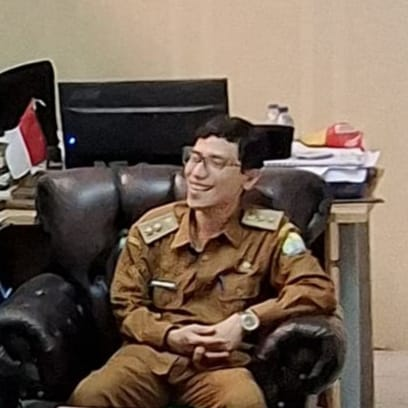

Desa Sawah Luhur
Kecamatan Kasemen

Windy Jatmiko S.Pd M.Si.
Lurah
Periode: 2023 - 2029
Data Statistik Desa
Data
Jumlah
Laki-laki
5.001
Perempuan
4.824
Total Penduduk
9.825
Jumlah RT
42
Jumlah RW
9
Jumlah Dusun
3
Pekerjaan Penduduk
Pekerjaan
Jumlah
Petani
237
Buruh
900
PNS
250
Pelajar/Mahasiswa
2.000